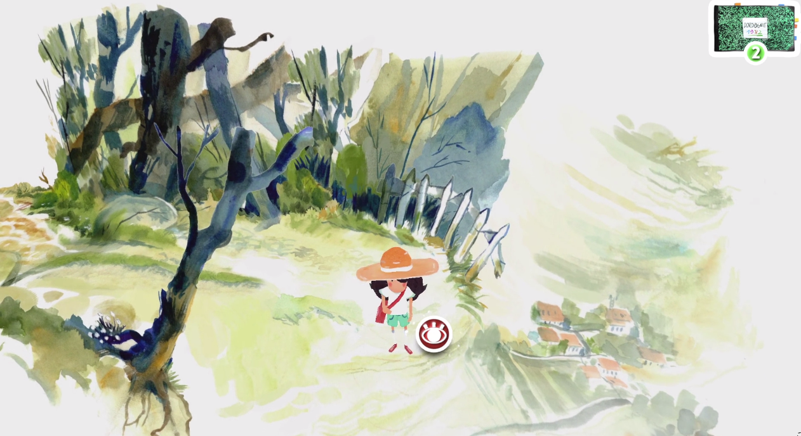
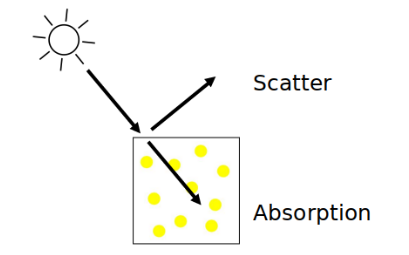
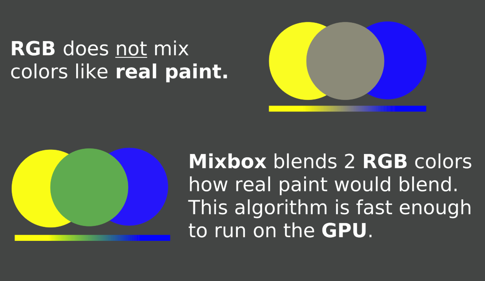
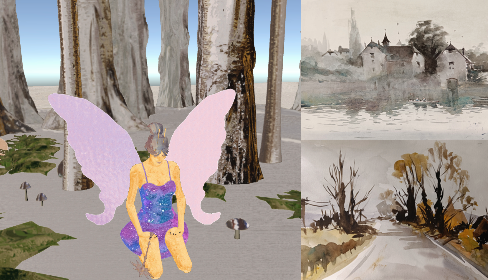

Watercolor is a beautiful medium. From children who smutge it on some paper to many big television productions in the 90's everyone has at least seen or played with it once.
Watercolor is in its essence water with many small pigment particles. These tiny tiny particles flow around freely in the water and find their place onto the paper using the water. This water influences where the pigment particles end up and makes watercolor so spacial. The water can for example more all the pigment particles to the edge. The edge of a stroke contains then all the color while the center may only contain a tiny bit. The water also allows you to take away some of the paint after you have painted of keep adding more and more color op top of each other.
Many games have played around with this watercolor look. I personally think Dordogne as seen in the image above has captured this watercolor look the best. They have done this by placing there 2d art inside the 3d world.
There are actually a lot of different techniques to digitally create watercolor. Many painting programs also know to make something look like watercolor, but still a game rarely looks like a 3D version of a watercolor painting.
If we could give an algorithm an image of a watercolor painting and ask it to paint us a 3d world we would be one step closer to making 3D world veel like watercolor paintings. For this we are going to use a Style transfer Algorithm. The specific algorithm that we are going to use is called StyleBlit.
StyleBlit was originally only not made to work well with example images of watercolor so we are going to make some small changes. StyleBlit works by seperating a 3D model in different patches. It then looks at the example image that you gave him, and it finds where he can cut something in the same shape as the patch. All the patches that the algorithm has made are now filled with cut outs.
To make this all a bit less noticleable we are going to teach StyleBlit how real paint works. Thanks to the people reseach work of Mixbox we know how to do that.
By default most software blends things in RGB. This is only not how real paint works. When a light ray hits paint a part of the light is scattered away, and a part of the light is absorbed. when 2 different paints are mixed together the light that is absorpt bounces between these different pigments. In the case you mix yellow paint with blue paint the absorpt light bounces between the pigments of both and gets seen by your eye as a green color.
 If we add this Mixbox blending to StyleBlit we get the following You can use your mouse cursor and scroll weel to see how StyleBlit colors this 3D model of a forest based on many different watercolor paintings. If you want to learn more I would suggest to take a look at my master thesis